Legenda Komputerów Domowych
Commodore 64, wypuszczony w 1982 roku, to więcej niż tylko komputer - to ikona, która zdefiniowała całe pokolenie. Dzięki przełomowej technologii, przystępnej cenie i bogatej bibliotece oprogramowania, C64 stał się najpopularniejszym komputerem domowym w historii, sprzedając się w ponad 17 milionach egzemplarzy na całym świecie.
Historia Commodore 64 to opowieść o wizji, innowacji i strategicznym geniuszu zespołu inżynierów pod przewodnictwem Jacka Tramiela.
Jack Tramiel zleca zespołowi MOS Technology stworzenie następcy Commodore VIC-20. Celem było zbudowanie komputera z 64KB pamięci RAM.
Commodore 64 został po raz pierwszy zaprezentowany na Consumer Electronics Show w Las Vegas. Cena detaliczna: $595.
Rozpoczęcie masowej produkcji i sprzedaży C64. Komputer szybko zyskuje popularność dzięki atrakcyjnej cenie i zaawansowanym możliwościom.
Szczyt popularności C64. Wprowadzenie kultowych gier jak "Impossible Mission", "The Bard's Tale", "Summer Games" i setek innych tytułów.
Oficjalnie zakończono produkcję C64 po 12 latach nieprzerwanej sprzedaży, ustanawiając rekord Guinessa jako najlepiej sprzedającego się komputera.
Commodore 64 był technologicznym cudem lat 80., oferując zaawansowane możliwości w przystępnej cenie.
Serce C64 - zmodyfikowana wersja popularnego 6502, z dodatkowymi liniami I/O do zarządzania bankami pamięci.
Rewolucyjny chip graficzny umożliwiający kolorową grafikę wysokiej rozdzielczości i płynne animacje sprite'ów.
Przełomowy chip dźwiękowy, który do dziś jest używany przez muzyków do tworzenia elektronicznej muzyki.
C64 to nie był tylko komputer - to był portal do cyfrowego świata, który ukształtował całe pokolenie programistów, graczy i artystów.
C64 miał bibliotekę ponad 10,000 gier! Kultowe tytuły jak "Maniac Mansion", "Wasteland", "The Last Ninja", "California Games" czy "Turrican" do dziś mają rzeszę fanów.
C64 stał się kolebką demosceny - ruchu artystyczno-programistycznego tworzącego spektakularne prezentacje audio-wizualne. Grupy jak Fairlight czy The Dreams czy Booze Design to legendy.
Dzięki wbudowanemu BASIC-owi i dostępności asemblera, C64 nauczył programowania miliony ludzi. Wielu dzisiejszych programistów zaczynało właśnie od C64.
Magnetofony do ładowania gier z kaset, dyskietki 5.25", crackerzy i swapperzy - C64 stworzył całą kulturę wymiany oprogramowania.
Ograniczenia sprzętowe C64 doprowadziły do rozwoju unikalnego stylu pixel artu, który wpłynął na całą estetykę gier komputerowych.
C64 był popularny na całym świecie - od USA, przez Europę, aż po Australię. W każdym kraju rozwinęła się lokalna scena i kultura.
Commodore 64 ustanowił rekordy, które do dziś robią wrażenie.
Przejrzyj kolekcję historycznych zdjęć, okładek gier i materiałów promocyjnych z epoki Commodore 64.
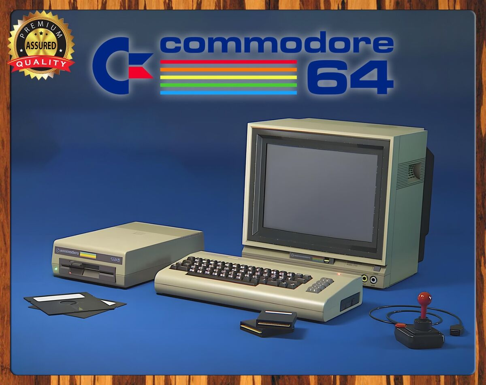
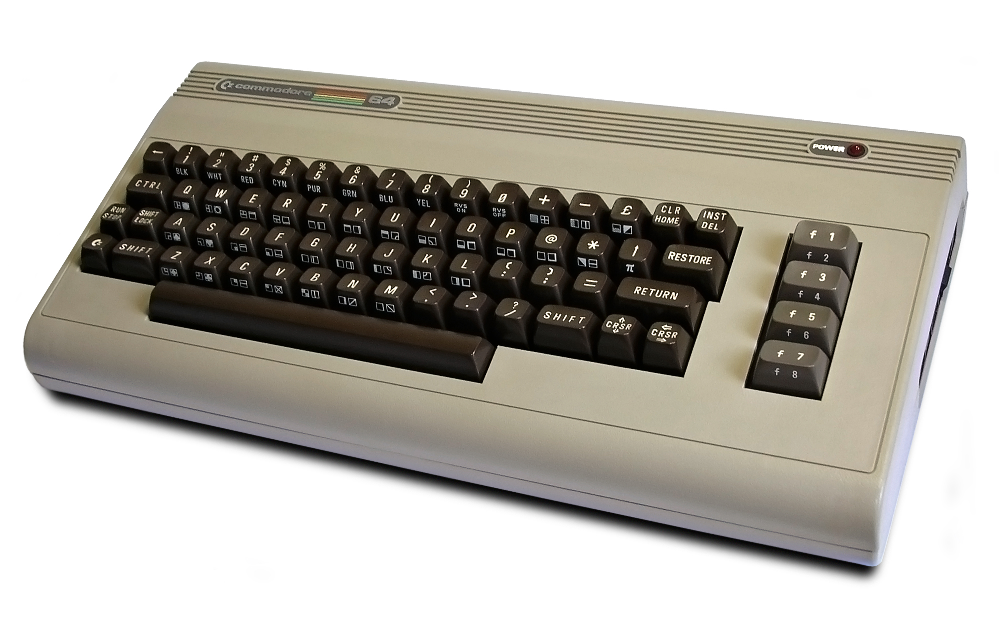
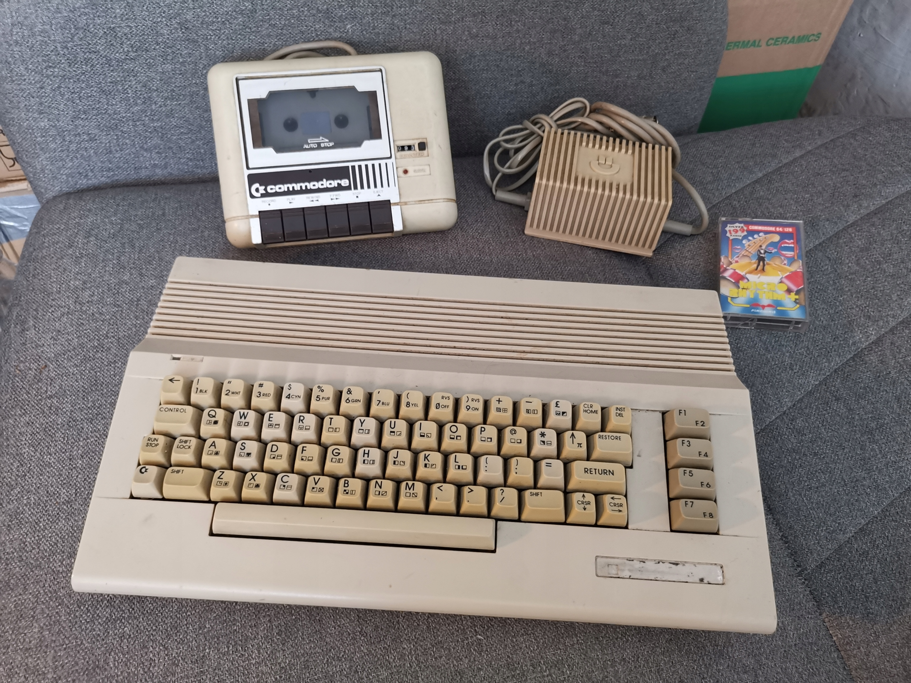
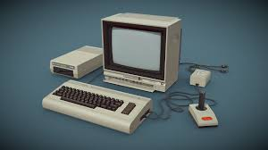
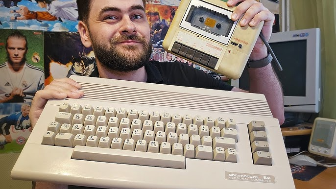
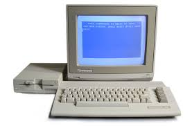
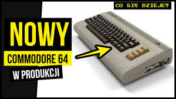
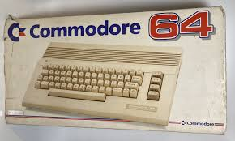
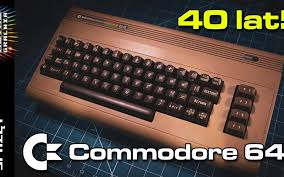
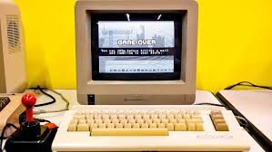
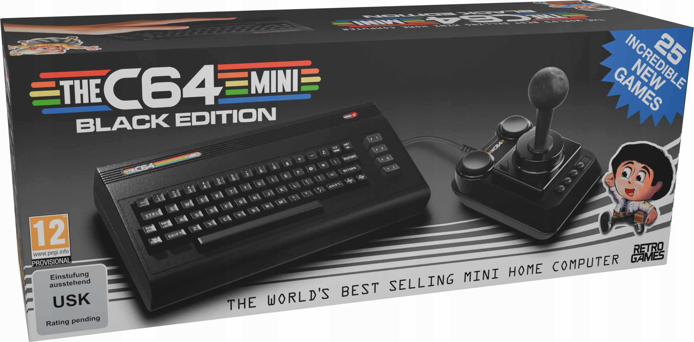
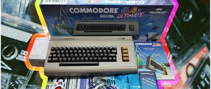
Wpływ Commodore 64 na branżę komputerową i kulturę popularną jest nie do przecenienia.
C64 oficjalnie figuruje w Księdze Rekordów Guinessa jako najlepiej sprzedający się model komputera domowego w historii.
C64 uczynił komputery dostępnymi dla zwykłych ludzi, nie tylko dla korporacji i entuzjastów. Był pierwszym prawdziwym komputerem domowym.
Wielu dzisiejszych liderów branży technologicznej, w tym twórcy Electronic Arts, Lucasfilm Games czy iD Software, zaczynało od programowania na C64.
Niska bariera wejścia w tworzenie gier na C64 zapoczątkowała ruch niezależnych deweloperów, który dziś nazywamy sceną indie.
40+ lat po premierze C64 nadal ma aktywną społeczność. Powstają nowe gry, dema, muzyka i hardware. To żyjąca legenda!
Chip SID wpłynął na rozwój muzyki elektronicznej. Artyści jak Rob Hubbard, Chris Huelsbeck czy Ben Daglish to kompozytorzy-legendy.